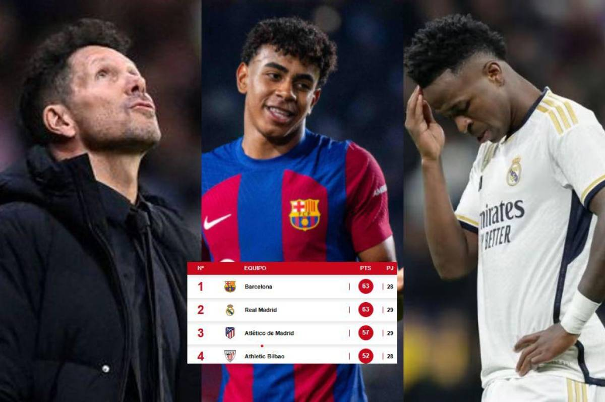

Bienvenidos a New Champions
Eslogan
Un equipo sobre todo. Sobre todo un equipo ". No hay un "yo" en el equipo.
Campeon Actual
La Liga de Campeones de la UEFA 2025-26 será la 71.ª edición del principal torneo de fútbol de clubes de Europa organizado por la UEFA, y la 34.ª edición desde que pasó de ser Copa de Europa a Liga de Campeones de la UEFA123
Equipos
La Liga de Campeones de la UEFA 2025-26 será la 71.ª edición del principal torneo de fútbol de clubes de Europa organizado por la UEFA, y la 34.ª edición desde que pasó de ser Copa de Europa a Liga de Campeones de la UEFA. La final se jugará el 30 de mayo de 2026 en el Puskás Aréna de Budapest, Hungría.
Tabla de goleadores
Conoce toda la tabla de goleadores de la temporada 2024-25 de UEFA Champions League en ESPN DEPORTES. Incluye los 50 máximos goleadores y asistidores de la liga./p>
Noticias
La final de la Champions League 2025 se llevará a cabo en Múnich, y los aficionados están ansiosos por conseguir entradas para el evento
Informate con nosotros
Mejores momentos
Ve los mejores momentos
Te puede interesar
la pagina oficial de UEFA